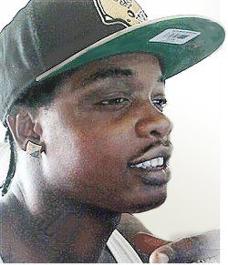

The #'s Presence
Trayvon Martin 17, Feb. 26th '12, Sandford, FL. Killed by George Zimmerman who was acquitted of all charges because of the controversial "stand your ground" law in Florida. Family was awarded a undisclosed amount from the home-owner's association.
Jordan Davis 17, Nov. 23rd '12, Jacksonville, FL. Killed by Michael Dunn who didn't like the music Davis's car was playing. The first jury could not agree to charge Dunn with murder. The second trial ended with a guilty verdict of first-degree murder.
Kendrick Johnson 17, Jan. 10th '13, Valdosta, GA. Originally ruled an accident, Johnson's body was found rolled up inside a wrestling mat in the gym of the high school that he attended. There was clear evidence which reporters pieced together, not detectives. They found "lapses" in the 35 cameras that surrounded the gym, were not lapses at all, but edited to appear as if there were malfunctions. No suspects were ever charged.
Renisha McBride 19, Nov 2nd '13, Dearborne Heights, MI. Murdered by Theodore Wafer for knocking on the wrong door at the wrong time, while she was intoxicated and had a potential head injury. Wafer was found guilty of second-degree murder and manslaughter.
Ernest Satterwhite 68, Feb. 9th '14, Columbia, SC. Killed by officer Justin Craven who plead down to a misconduct of office and avoided jail time. Family settled with police department $1.2 million.
Dontre Hamilton 31, Apr. 30th '14, Milwaukee, WI. Killed by officer Christopher Manney who fired but never charged with a crime. Dontre had a history of mental illness, treated for schizophrenia. Protesting led to all Milwaukee officers wearing body cameras. Family was awarded $2.3 million.
Eric Garner 44, Jul. 17th '14, Staten Island, NY. Killed by officer Daniel Pantaleo and officer Justin D'Amico who were never indicted. Pantaleo was fired in '19. Family was awarded $5.9 million. Garner was on video saying "I can't breathe" seven times.
John Crawford IIIrd 22, Aug 5th '14, Beavercreek, OH. Killed by officer Sean Williams inside a Walmart while holding a BB gun in the sporting goods section. No charges were filed against Williams. Family was awarded $1.7 million.

Michael Brown Jr. 18, Aug 9th '14, Ferguson, MO. Killed by officer Darren Wilson who fired his gun 12 times hitting Brown 6 times. Dorian Johnson a witness claims Brown was turning around after already being shot and had his hands in the air. Protesters began using the "hands up, don't shoot" slogan.
Levar Jones, Sep. 4th '14, Charleston, SC. Levar was shot and injured by officer Sean Groubert during a seat belt violation. Jones was reaching for his wallet from outside of his vehicle, while being shot. Jones is heard saying "What did I do, sir? Why did you shoot me?"

Vonderitt D. Myers III 18, Oct. 8th '14, St Louis, MO. Killed by off duty officer Jason Flanery who fired 17 times at Myers, hitting him 8 times mainly in the back of the legs and one the Myers head. Flanery did not face any charges. Michael Brown and Vonderitt Myers were related and killed 20 miles from each other, two months apart.

Laquan Mcdonald 17, Oct. 20th '14, Chicago, IL. Murdered by officer Jason Van Dyke while walking away being shot in the back. The shooting was originally considered justified, 13 months later when they released the dash cam footage. That same day Van Dyke was charged with first-degree murder. Van Dyke was found guilty of second-degree murder as well as 16 counts of aggravated battery with a firearm. The family was awarded $5 million.

Akai Gurley 28, Nov. 20th '14, Brooklyn, NY. Murdered by officer Peter Liang who fired with no causation in a unlit stairwell. Liang was convicted of manslaughter and official misconduct. A judge later changed his charges of manslaughter down to criminally negligent homicide. This cleared Liang of any jail time.
Tamir Rice 12, Nov. 22nd '14, Cleveland, OH. Killed by officer Timothy Loehmann, shooting him twice, while he was playing at a playground with a toy gun. The dispatcher was told several times that it was a kid and likely it was a toy gun, the dispatcher did NOT relay this information. Family was awarded $6 million.
Rumain Brisbon 34, Dec. 2nd '14, Phoenix, AZ. Killed by officer Mark Rine who shot Brisbon twice in the back. Witness accounts vastly differ from Rine's police report. No charges were filed against Rine. The family was awarded $1.5 million which the City Council members did not want to pay.
Antonio Martin 18, Dec. 23rd '14, Berkeley, MO. Killed by officer Andrew Weusthoff who shot three times, striking Martin only once and his own police cruiser once. Originally deemed justified, the police department launched a homicide investigation. Somehow I could not find anything further in this case.
Charly 'Africa' Leundeu Keunang 43, Mar. 1st '15, Los Angeles, CA. Killed by officer Francisco Martinez shooting him three times while being pinned down by several officers on the scene. Keunang was mentally ill and homeless. Martinez did not face any charges. Family was awarded $1.95 million, when body camera footage was released three years later.
Tony Robinson Jr. 19, Mar. 6th '15, Madison, WI. Killed by officer Matt Kenny, shot 7 times while halfway down a flight of stairs. This was a call for a "wellness check" because of his history with mental illnesses. Kenny did not face any charges. Family was awarded $3.35 million.

Naeschylus Carter-Vinzant 37, Mar. 6th '15, Aurora, CO. Killed by officer Paul Jerothe who shot Vinzant within 10 seconds of arriving on the scene, who was unarmed. Grand jury did not indict him with any charges. Family was awarded $2.6 million.

Anthony Hill 26, Mar. 9th '15, Chamblee, GA. Anthony Hill a US Air Force veteran suffered from PTSD was naked and unarmed when he was shot in the torso and neck by officer Robert Olsen. Hill was also carrying a taser, bully club, and pepper spray. Hill was found not guilty of two counts of felony murder, but convicted of aggravated assault, making a false statement, and two counts of violation of oath. Settlement still in court.
Walter Scott 50, Apr. 4th '15, Charleston, SC. Murdered by officer Michael Slager who fired eight shots at Scott hitting him five times. Slager lied in the police report saying Scott had taken his taser. A by-stander's cell phone video captured a different story. Slager was sentenced to 20 years in prison for a second-degree murder charge. Family was awarded $6.5 million.
Freddie Carlos Gray Jr. 25, Apr. 12th '15, Baltimore, MD. Died seven days after the arrest. He had slipped into a coma while being transported in a police cruiser from a severe neck injury. Five officers were indicted on several charges, however the case fell apart and every last one of them had charges dropped or were found not guilty. Family was awarded $6.4 million.
Sandra Bland 28, Jul. 13th '15, Hempstead, TX. Sandra committed suicide three days after the arrest, while in a jail cell. She was being held for assaulting a police officer, who in turn also had charges brought against him for the "due process" violations. Officer Brian Encinia was later cleared of all charges with agreement to not seek law enforcement employment. Family was awarded $1.9 million.
Jamar Clark 24, Nov. 15th '15, Minneapolis, MN. Killed by officer Mark Ringgenberg and officer Dustin Schwarze while on the ground and handcuffed. Neither officer faced any discipline for the incident. Black Lives Matter protesters were met by white supremacist and fired multiple shots into the crowd striking five protesters. Family was awarded $200 thousand.
Alton Sterling 37, Jul. 5th '16, Baton Rouge, LA. Killed by officer Howie Lake II and officer Blane Salamoni who shot Sterling while his was on the ground. Police were dispatched for a different reason and wrongly assumed Sterling was their target. Neither the county or state would bring charges against the officers. Several bystanders recorded the shooting on their cell phones. The city is currently deciding on a settlement amount for his five children.
Black Lives Matter Wins Lawsuit Against Baton Rouge PoliceThese protests were taking place due to the city of Baton Rouge not charging officers in the fatal shooting of Alton Sterling. Activist DeRay Mckesson was a part of a $100,000 settlement for 92 plaintiffs. They argued that the BRPD used militarized policing and "unconstitutional tactics".
Philando Castile 32, Jul. 6th '16, Flacon Heights, MN. Killed by officer Jeronimo Yanez who shot Castile through the car door while Castile was reaching for his wallet. Yanez fired his gun seven times hitting Castile five times. Diamond Reynolds who was driving live streamed the immediate aftermath of the shooting, showing Castile dying with a gun still pointed at him. Family was awarded $3.8 million.
Black Lives Matter Get Invited to the White House In June 2016 President Barack Obama officially invited some members of the Black Lives Matter movement to the White House to meet with him and cabinet members. Shortly after this meeting they were invited back for another panel, and President Obama began to defend the Black Lives Matter on a national platform.
Charles Kinsey 47, Jul. 18th '16, Miami, FL. Kinsey was shot and injured in the leg by officer Johnathan Aledda. Kinsey was retrieving his severely autistic patient and while laying on his back trying to negotiate with both the patient and Aledda, Aledda fired his gun at the patient however striking Kinsey. One officer had asked Aledda why he shot him. Aledda was convicted of culpable negligence. Kinsey received $1.9 million, and the patient's family received a undisclosed amount.
Deborah Danner 66, Oct. 18th '16, New York City, NY. Killed by Sgt. Hugh Barry who shot Danner twice in her bedroom. Barry was charged but acquitted of all charges by a judge in a non-jury trial. Danner suffered from schizophrenia, and had written an essay about her health. Family was awarded $2 million.
Grechario Mack 30, Apr. 10th '18, Los Angeles, CA. Killed by Sgt. Ryan Lee who fired four shots at him in a mall, then officer Martin Robles arrived and fired his rifle eight more times as Mack tried to stand up. Mack had a knife and was mentally distressed in the mall. Neither officer faced any discipline. Family is seeking $5 million in a civil lawsuit.
Kenneth Ross Jr. 25, Apr. 11th '18, Los Angeles, CA. Killed by officer Michael Robbins, shooting Ross twice, once in the back and once in the arm. No discipline was issued for this shooting. Witnesses believe that Ross was suffering from a mental health crisis.
Isaiah Lewis 17, Apr. 29th '19, Edmond, OK. Killed by Sgt. Milo Box and Sgt. Denton Scherman, shot several times during an altercation. Scherman fired multiple sets of rounds towards Lewis who was naked and unarmed. The officers dragged his body outside while he was profusely bleeding out. No discipline was issued to either Sargent. Family is seeking a settlement in a civil lawsuit currently.
Elijah McClain 23, Aug. 24th '19, Aurora, CO. Killed by officer Nathan Woodyard who applied a choke hold around his neck while other officers were on top of him. Paramedics then injected McClain with 500 mg of ketamine. Several times McClain is heard saying "I'm sorry, I wasn't trying to do that, I can't breathe correctly." He was pronounced brain-dead six days later. Investigation have only began today the 26th of June in 2020.
Ahmaud Arbery 25, Feb. 23rd '20, Glynn County, GA. Killed by Travis and Gregory McMichael and William Bryan, shot with a shotgun. These three took it upon themselves to seek justice for a crime which was misunderstood and inflated by their personal beliefs. All three men have officially been indicted and are in court now for malice murder, four counts of felony murder, two counts of aggravated assault, false imprisonment, and criminally intent to commit false imprisonment.
Breonna Taylor 26, Mar. 13th '20, Louisville, KY. Killed by officer Johnathan Mattingly, officer Brett Hankison, and officer Myles Cosgrove who were serving a no-knock warrant at the wrong house. The police were informed that the suspect they were actually looking for was already apprehended. Taylor's boyfriend fired shots after the door was taken down, the officers returned fire striking Taylor eight times. Mattingly has been fired, and the investigation continues.
George Floyd 47, May 25th '20, Minneapolis, MN. Killed by officer Derek Chauvin, officer Tou Thao, officer J. Alexander Kueng, officer Thomas Lane. Chauvin spent the entirety of seven minutes and forty two seconds with his knee on Floyd's neck. Floyd is recorded saying "I can't breathe" several times, and cried for his "Momma" who has already passed. All four officers have been charged, and are in court currently.
Tony McDade 38, May 27th '20, Tallahassee, FL. The officer who fatally shot McDade is hiding behind a victim's clause which protects his name. There are several videos on Facebook and witness accounts that contradict the police departments initial statement of McDade having a firearm. The witnesses also recall hearing the officers call out "Stop moving, n--r." This is currently still being investigated.
Rayshard Brooks 27, Jun. 12th '20, Atlanta, GA. Killed by officer Garrett Rolfe and officer Devin Brosnan in a Wendy's parking lot. Rolfe shot Brooks in the back twice and a third bullet hit an occupied car with a family inside. Rolfe is being charged with felony murder, five counts of aggravated assault, four counts of violation of oath, and damage to property. Brosnan is being charged with aggravated assault and two counts of violation of oath.
Full and Partial Bans on Choke holds, Duty to Intervene, Disciplinary Reporting, No-Knock Warrants, Re-funneling Funds In the wake of George Floyd's death and subsequent protest across the nation, dozens of cities and a handful of states have updated or even completely changed their policy regarding the use of choke holds and the responsibilities of an arresting officer. Smaller cities have seen changes regarding a "duty" to intervene and report excessive force by fellow officers, punishable by criminal prosecution. For too long police discipline records have been kept secret, even after an officer is removed from an office, the next station may not be aware of the reasons for the removal. New York has unburdened themselves of one such law, with Massachusetts and some cities following suit. Louisville, KY following Breonna Taylor's killing has voted to ban all no-knock warrants. Many cities have began shifting money from their police department into other institutions that have proven to be a great alternative to calling the police for non-criminal and non-violent calls. New York City has also proposed a $1 billion funding cut to their departments.